V8b 與 OpenFHE 加密能耗比較及軟硬體切分實測
能耗比較：2026-11-23 10:59–11:16 UTC，每種設定 10 輪，每輪 30 秒 軟硬體切分：13:31–13:36 UTC
平台：KV260（Ubuntu 22.04，4 × Cortex-A53 1.333 GHz） 量測：ESP32-S3 + INA228 整板探針（12 V 輸入端）
摘要
9.54 倍只計加密，V8b 每焦耳筆數
相對 OpenFHE 4 執行緒
95% 信賴區間 9.50–9.57 倍
9.15 倍只計加密，V8b 每秒筆數
相對 OpenFHE 4 執行緒
13% 對 100%加密時 4 顆 ARM 核心的
平均使用率
V8b 對 OpenFHE 4 執行緒
- V8b 以 FPGA 的可程式邏輯（PL）執行加密、ARM 負責控制與搬運資料，每加密 2048 筆資料消耗約 11.4 mJ；純 ARM 的 OpenFHE 4 執行緒約 108.3 mJ，單執行緒約 378.0 mJ。
- V8b 與 OpenFHE 4 執行緒的整板功率相近（9.931 W 對 10.348 W），能耗比的差距主要來自處理速度。
- 以扣除待機功率後的淨值計算，結論方向相同：V8b 的每焦耳筆數為 OpenFHE 4 執行緒的 13.2 倍。
- V8b 10 輪每焦耳筆數的變異係數為 0.48%；探針螢幕即時算出的每焦耳筆數與電腦分析的差異最大為 0.65%，顯示量測的重複性良好（準確度的討論見限制與注意事項）。
- 軟硬體切分（見「軟硬體切分」一章）：整段加密在 PL 比 ARM 單核快 30 倍；每個密文多耗的能量，ARM 為 PL 的 9.0 倍（2.49 mJ 對 0.28 mJ）；含 ARM 正規化與編碼時，V8b 切分的每焦耳筆數為全部在 ARM 的 5.7 倍（兩者皆為實測，V8b 以共同執行近似）。
量測方法
| 項目 | 內容 |
|---|
| 比較對象 | V8b rev5：ARM 負責控制與搬運資料，PL 負責加密
OpenFHE 1.5.1，4 執行緒，只用 ARM
OpenFHE 1.5.1，單執行緒，只用 ARM |
| 共同參數 | CKKS，N = 4096，每個密文 2048 個 slot，3 個 RNS 模數（約 88 位元：V8b 88.6、OpenFHE 88.0），公鑰加密。OpenFHE 實際選出的模數為 1073692673／536813569／536903681，與 repo 文件（docs/NATIVE_V4.md 4.4 節）的 OpenFHE 對照組相同。 |
| 工作定義 | 三種設定相同：每個 frame 8 個密文，8 筆明文事先編碼一次，迴圈內只做加密，連續 30 秒；第一個與最後一個 frame 皆檢查正確性（V8b 與規格模型逐位元比對；OpenFHE 解密誤差 < 10−3，實測約 10−4）。 |
| 筆數換算 | 每筆資料有 4 個特徵（CDC 模型），每個密文裝 2048 筆資料的同一個特徵，因此 1 個密文相當於 512 筆。 |
| 能量量測 | INA228 串接於 KV260 的 12 V 輸入（整板），VBus 接在供電側的 Vin+，每 0.1 秒一筆；探針未校正（K = 1），各設定的比值不受校正影響（見限制與注意事項）。 |
| 總值與淨值 | 總值 = 筆數 ÷ 這 30 秒的整板能量。淨值 = 筆數 ÷［（加密時功率 − 同一狀態的待機功率）× 秒數］。 |
| 待機狀態 | V8b：已載入 V8b 硬體與驅動，不執行加密（8.923 W）。OpenFHE：PL 清空，不載入任何 FPGA 設計（8.891 W）。兩者皆比板子的預設狀態（k26-starter-kits）高約 0.8 W，原因尚未確認；對倍數的影響見限制與注意事項。 |
| 統計 | 每種設定 10 輪；信賴區間以 t 分布計算，倍數的信賴區間以對數比值的誤差傳遞（Welch 自由度）計算。 |
結論怎麼寫
建議寫法：在相同 CKKS 參數（N = 4096、3 個 RNS 模數、約 88 位元）且只計公鑰加密的條件下，以外接探針量測 KV260 整板 12 V 輸入，將加密交給 FPGA 的 V8b（ARM + FPGA）每焦耳可加密 180,411 筆資料，為純 ARM 執行 OpenFHE 1.5.1（4 執行緒，PL 清空）的 9.5 倍（95% 信賴區間 9.5–9.6 倍，各 10 輪）；同時 CPU 使用率由 100% 降到 13%。
這份資料支持的說法
- 加密這一步，ARM + FPGA 比純 ARM 的 OpenFHE 省電。倍數的信賴區間下限 9.5 倍遠大於 1，Welch t 檢定 p < 10−10。
- 省電的原因是速度，不是功率。兩者整板功率只差 4%，V8b 的處理速度是 9.2 倍。
- V8b 的 FPGA 設計本身的額外待機耗電很小。載入 V8b 後的待機功率比 PL 清空只高 32 mW；但兩者皆比板子的預設狀態高約 0.8 W，原因尚未確認（見限制與注意事項）。
- CPU 被釋放出來。V8b 只用約 0.5 顆核心，其餘可做編碼、網路等工作。
- 量測的重複性良好。整板外接量測、10 輪變異小、兩種獨立計算方式一致（最大差異 0.65%）；絕對準確度見限制與注意事項。
還不能宣稱的說法
- 「整個系統省 10 倍」。V8b 與 OpenFHE 的比較只量加密。加入 ARM 端的正規化與編碼後，V8b 切分的每焦耳筆數為全部在 ARM 的 5.7 倍（見「軟硬體切分」一章）；網路傳輸、雲端計分與解密仍不在內，端到端的倍數需另外量測。
- 「比任何純 ARM 實作都省電」。本次對照 OpenFHE 與團隊的 CPU 規格程式（4 核只加密每秒 23.2 萬筆，與 OpenFHE 相近）；V8b 應用程式中最佳化過的 ARM 版本尚未量測。
- 「安全性完全相同」。參數規模相同（N、模數位元數、三元秘密金鑰），但雜訊分布與取樣實作不同，應寫成「參數規模相同」。
- 其他 EdgeFHE 版本的結論。本次只量 V8b rev5；repo 中較早的 V5 實板結果（每次 FPGA 呼叫有約 4 ms 額外負擔）方向相反，不可混用。
簡報可以用的一句話
「同樣加密一批 2048 筆資料，V8b 用 11.4 mJ，純 ARM 的 OpenFHE 用 108 mJ；速度快 9 倍，CPU 只用 13%。」
圖表與說明
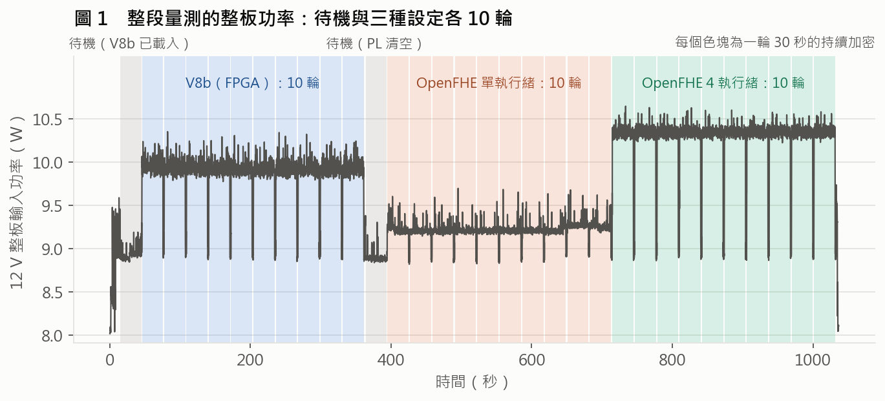
- 圖說
- 整段量測。灰色底為待機，藍、橘、綠色底分別是 V8b、OpenFHE 單執行緒、OpenFHE 4 執行緒的 30 秒持續加密，每種 10 輪。
- 怎麼看
- 線的高度為 KV260 整板由 12 V 輸入取得的功率。每一輪開始時功率上升、結束時回到待機水準，顯示量到的是加密本身造成的變化。
- 重點
- 同一種設定的 10 輪高度幾乎相同。V8b 約 9.93 W、OpenFHE 4 執行緒約 10.35 W、單執行緒約 9.22 W；功率差距不大，但處理速度差很多（圖 3）。
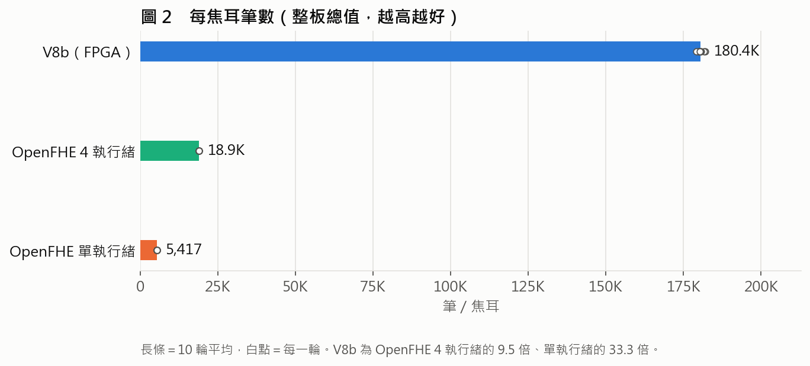
- 圖說
- 每消耗 1 焦耳的整板能量可以加密多少筆資料。長條為 10 輪平均，白點為每一輪。
- 怎麼看
- 越長越省電。白點集中在長條末端，代表各輪之間差異很小。
- 重點
- V8b 為 180,411 筆／焦耳，是 OpenFHE 4 執行緒（18,913）的 9.5 倍、單執行緒（5,417）的 33.3 倍。換算成每筆資料：V8b 約 5.5 µJ，OpenFHE 4 執行緒約 52.9 µJ，單執行緒約 184.6 µJ。
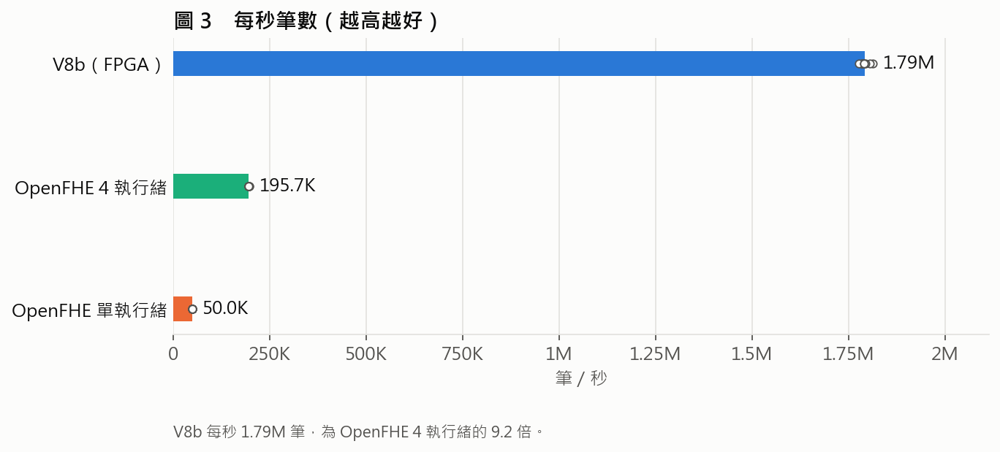
- 圖說
- 每秒能加密的資料筆數。
- 怎麼看
- 越長越快。這張圖與圖 2 的形狀幾乎一樣，因為三種設定的功率相近，每焦耳筆數主要由速度決定。
- 重點
- V8b 每秒 179 萬筆，是 OpenFHE 4 執行緒（19.6 萬筆）的 9.2 倍。OpenFHE 從單執行緒到 4 執行緒加速 3.9 倍，接近線性，代表純 ARM 版本已經用滿 4 顆核心。
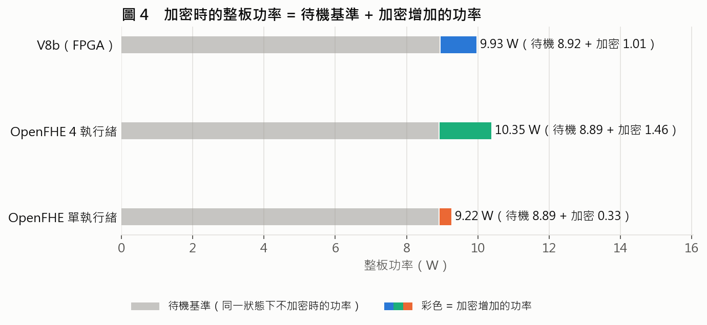
- 圖說
- 加密時的整板功率拆成兩段：灰色為待機基準（同一狀態下不加密時的功率），彩色為加密增加的功率。
- 怎麼看
- 灰色段遠長於彩色段：板子本身的待機功率約 8.9 W，加密只增加 0.33 至 1.46 W。
- 重點
- V8b 加密時增加 1.01 W，OpenFHE 4 執行緒增加 1.46 W。V8b 用較少的額外功率完成約 9 倍的工作量。由於待機占大部分，整板總值會低估加密本身的效率差距，因此另外計算淨值（圖 5）。
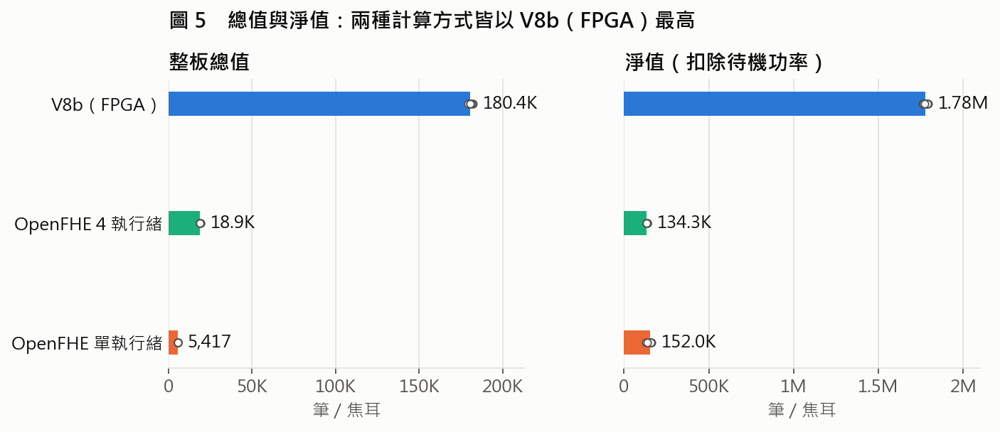
- 圖說
- 左邊是整板總值（同圖 2），右邊是扣除待機功率後的淨值。兩張圖的橫軸刻度不同。
- 怎麼看
- 總值回答「這塊板子實際每焦耳做多少事」；淨值回答「加密這件事本身每焦耳做多少事」。
- 重點
- 兩種計算方式皆以 V8b 最高。淨值下 V8b 約 178 萬筆／焦耳，是 OpenFHE 4 執行緒（13.4 萬）的 13.2 倍。淨值的分母是較小的差值，誤差會被放大，主要結論以總值為準。
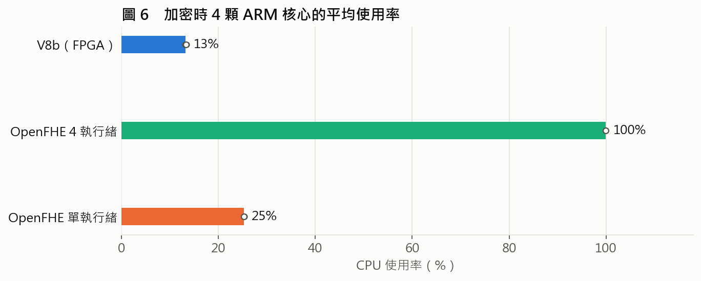
- 圖說
- 加密期間 4 顆 ARM 核心的平均使用率（取每輪開始後第 5 至 25 秒）。
- 怎麼看
- 100% 代表 4 顆核心全滿；25% 約等於 1 顆核心全滿。
- 重點
- V8b 只用約 13% 的 CPU（約 0.5 顆核心，負責搬運資料與處理 DMA 中斷），其餘 CPU 可以做其他工作。OpenFHE 4 執行緒用滿全部核心，速度仍只有 V8b 的 11%。
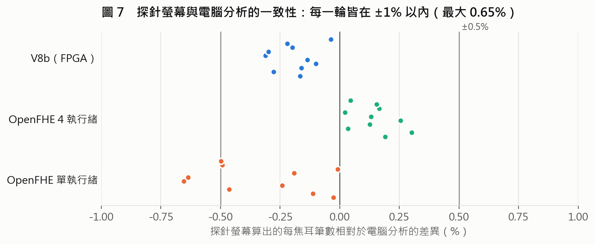
- 圖說
- 每一輪的每焦耳筆數由探針螢幕與電腦分析各算一次，點是兩者的差異百分比。
- 怎麼看
- 探針螢幕用 INA228 晶片內建的能量累積器（連續累積），電腦分析用每 0.1 秒一筆的功率取平均；兩種計算方式的取樣方式不同。點越靠近 0，兩者越一致。灰色參考線為 ±0.5%，即 INA228 內部振盪器的公差上限：能量累積器以晶片的振盪器計時，電腦以系統時鐘計時，兩者的時基差異會直接反映在此。
- 重點
- 30 輪的差異最大為 0.65%，兩種計算方式互相印證，量測流程沒有漏算或重算能量。少數輪次略超出 ±0.5% 參考線，仍在 ±1% 以內。兩者共用同一個分流電阻與 ADC，因此這項比對檢驗的是能量的計算，不檢驗增益誤差。
結果總表
| 設定 | 輪數 | 每秒
筆數 | 加密時
功率 | 待機
功率 | 每焦耳筆數
（總值） | 95%
信賴區間 | 淨值 | 每 2048
筆 | CPU |
|---|
| V8b | 10 | 1,791,652 | 9.931 W | 8.923 W | 180,411 | 179,787–181,036 | 1,777,895 | 11.4 mJ | 13% |
OpenFHE
4 執行緒 | 10 | 195,710 | 10.348 W | 8.891 W | 18,913 | 18,881–18,945 | 134,347 | 108.3 mJ | 100% |
OpenFHE
單執行緒 | 10 | 49,955 | 9.221 W | 8.891 W | 5,417 | 5,404–5,431 | 151,953 | 378.0 mJ | 25% |
| 比較（V8b ÷ 對照組） | 倍數 | 95% 信賴區間 | Welch t 檢定 p 值 |
|---|
| 每焦耳筆數（總值），對 OpenFHE 4 執行緒 | 9.54 | 9.50–9.57 | < 10−10 |
| 每焦耳筆數（總值），對 OpenFHE 單執行緒 | 33.3 | 33.2–33.4 | < 10−10 |
| 每焦耳筆數（淨值），對 OpenFHE 4 執行緒 | 13.23 | 13.16–13.30 | < 10−10 |
| 每秒筆數，對 OpenFHE 4 執行緒 | 9.15 | 9.12–9.19 | < 10−10 |
限制與注意事項
- 探針未校正。本團隊原本計畫校正探針，但手邊沒有比 INA228 更準確的參考儀器，因此改為查核規格書的準確度。依 TI 規格書（SLYS021A），INA228 的分流電壓與匯流排電壓增益誤差最大皆為 ±0.05%，分流偏移最大 ±1 µV（15 mΩ 下約 ±67 µA），匯流排偏移最大 ±2.5 mV，積分非線性為 ±0.002%；在 12.14 V 時，匯流排電壓的誤差上限為 0.05% × 12.14 V＋2.5 mV ≈ 8.6 mV（約 0.07%）。以實驗室三用電表比對時，三用電表讀得 12.21 V、探針讀得 12.14 V，兩者相差 0.58%，約為此電壓誤差上限的 8 倍，因此差距來自三用電表本身的準確度（手持電表的直流電壓準確度通常約 ±0.5%）或量測點不同（電源線在 0.6 A 時約有 0.07 V 壓降），而非來自 INA228；三用電表反而是兩者中較不準確的一方，不適合作為校正基準，因此本團隊未套用修正係數（韌體維持
K_V = K_I = 1）。模組上的分流電阻（R015）未標示公差，探針絕對數值的不確定度因此無法由規格界定；若以 1% 公差估計，約為 1%。此外，VBus 接在 Vin+，即在供電側（分流電阻上游）量測電壓，量得的功率包含分流電阻與導線的少量損耗。上述因素只影響絕對數值，不影響比較：V8b 與 OpenFHE 使用同一支探針、同一次量測與相同的 30 秒區間定義（各輪的區間不同），負載電流亦相近（V8b 0.82 A、OpenFHE 4 執行緒 0.85 A）；增益誤差使各設定的能量乘上同一係數，在每焦耳筆數的比值中抵消；偏移（實測零點約 −0.05 mA）低於負載的 0.01%；積分非線性與振盪器公差亦不致使各設定之間產生偏差。因此，V8b 相對 OpenFHE 4 執行緒的 9.54 倍（95% 信賴區間 9.50–9.57）不受影響。10 輪的變異係數與兩種能量計算方式的一致性只顯示量測的重複性，並不檢驗增益誤差。
- 接上乙太網路後整板功率高約 1 W。同日更早、尚未接乙太網路時，V8b 的每秒筆數相近（1,786,687），加密時功率為 8.883 W，每焦耳筆數為 201,141。不同時段、不同接線的絕對數值不宜直接比較；同一次量測內的倍數不受影響。
- 可重現。本團隊同日稍早以相同接線各跑 3 輪，其平均與本次 10 輪的平均相差：V8b +0.1%、OpenFHE 4 執行緒 −0.9%、OpenFHE 單執行緒 +0.4%。
- 量測順序固定。本次量測依序跑完 V8b 的 10 輪，再跑 OpenFHE。各設定第 1 輪到第 10 輪的趨勢變化：V8b −0.77%、OpenFHE 4 執行緒 +0.12%、OpenFHE 單執行緒 −0.58%，遠小於兩者的差距。
- 只量加密。三種設定都不含 ARM 端的正規化與編碼、雲端計分與解密；端到端的每焦耳筆數會比本表低。含編碼的比較見「軟硬體切分」一章。
- 待機狀態不同。V8b 的待機包含已載入的 FPGA 設計（8.923 W）；OpenFHE 的待機為 PL 清空（8.891 W），兩者相差 32 mW。兩者皆高於板子的預設狀態（k26-starter-kits）：本次量測開始前與還原預設狀態後的探針讀值（各約 1 秒）平均為 8.06 W，比 PL 清空低 0.83 W；同日未接乙太網路的量測中，預設狀態的待機（7.298 W）亦比 V8b 已載入（7.946 W）低 0.65 W。此差異的原因尚未確認。本報告的倍數以 OpenFHE 在 PL 清空狀態執行為前提；若 OpenFHE 改在預設狀態執行而 V8b 不變，以上述待機差推算（假設此差值在加密時不變，未實測），每焦耳筆數的倍數約為 8.8–9.0 倍。建議本團隊於期末展示前在預設狀態下實測 OpenFHE，以確認此推算。
- 同一個 frame 重複加密。三種設定都把同一批明文反覆加密；加密的計算量與明文內容無關，但實際應用中每批資料都不同。
- OpenFHE 的用法。4 執行緒版本以 OpenMP 平行加密不同的密文，OpenFHE 內部的平行區段不再巢狀展開；這是本次採用的設定，不代表 OpenFHE 的所有最佳化方式。
軟硬體切分：ARM 逐模組實測與 PL 估計
本章把客戶端的工作拆成最小模組，實測每個模組在 ARM 的時間與能量，依 HLS 原始碼估計 PL 各階段的時間，並實測 PL 整段加密的時間與能量，再比較三種切分方式。所有實測數值來自同一次量測（2026-11-23 13:31 UTC 起）；能量量測期間 V8b 全程載入，待機基準為 8.901 W，能量一律取自外接探針量測的整板 12 V 輸入。
30 倍整段加密的時間（兩端實測）
ARM 單核 8.56 ms
PL 路徑 0.281 ms（含驅動）
9.0 倍每個密文多耗的能量
ARM 單核 2.49 mJ
PL 路徑 0.28 mJ
5.7 倍含 ARM 正規化與編碼的
每焦耳筆數：V8b 切分對
全部在 ARM（兩者皆為實測，
V8b 以共同執行近似）
量測方法
| 項目 | 內容 |
|---|
| ARM 端 | V8b 的 CPU 規格程式（baseline/core.cpp、sampler_b.hpp，輸出與 PL 逐位元一致），N = 4096、3 個模數。每個模組單獨在 1 顆核心連續執行 8 秒，取每個密文的平均時間。 |
| PL 端 | V8b rev5 加密核心（200 MHz）。整段加密以 board_enc_check sustain 連續 15 秒量測（每次呼叫 8 個密文）；各階段的時間依 HLS 原始碼估計（迴圈次數 × 啟動間隔），未逐階段實測，PL 端也沒有逐模組的能量。 |
| 能量 | 每個模組多耗的能量 =（執行時整板平均功率 − 待機功率）× 每個密文的時間；每顆忙碌核心約多耗 0.248 W。 |
| 整體驗證 | 全部在 ARM：正規化、編碼與加密以 4 執行緒連續 30 秒。V8b 切分：3 顆核心（CPU 1–3）連續執行正規化與編碼，同時 CPU 0 驅動 PL 連續加密 30 秒（共同執行）。兩者為獨立程式，編碼結果不送入 PL；系統速度取兩者中較慢者，每焦耳筆數以兩者同時執行時的整板功率計算。 |
| 正確性 | PL 比對 80 個 frame（7,372,800 個字），不一致 0 個、解密失敗 0 次；持續加密與共同執行的第一與最後一個 frame 皆逐位元正確。 |
各模組的兩端比較（ARM 實測、PL 估計）
| 模組 | 作用 | ARM
（ms） | ARM 多耗
（mJ） | PL
（µs） | ARM
÷ PL | V8b
位置 |
|---|
| 正規化 | 把原始特徵縮放到 CKKS 的數值範圍 | 0.010 | 0.003 | — | — | ARM |
| CKKS 編碼 | 2048 個數值經浮點 FFT 轉成整數多項式 m；PL 尚未實作 | 1.257 | 0.315 | — | — | ARM |
| m 轉 RNS | m 對 3 個模數取餘數 | 0.134 | 0.029 | 20.48 | 7 | PL |
| ChaCha20 亂數 | 產生遮罩與兩個雜訊多項式所需的亂數 | 0.333 | 0.094 | 73.46 | 5 | PL |
三元遮罩
（含其亂數） | 產生遮罩所需的亂數，並轉成係數為 −1、0、1 的遮罩 u | 0.033 | 0.006 | 11.44 | 3 | PL |
| CDT63 高斯取樣 | 亂數經查表轉成雜訊 e0、e1 | 1.154 | 0.316 | 44.80 | 26 | PL |
| 小數值轉 RNS | u、e0、e1 對 3 個模數取餘數 | 0.396 | 0.077 | 5.14 | 77 | PL |
| NTT(u) | u 的 3 個餘數各做一次 NTT | 1.788 | 0.347 | 33.66 | 53 | PL |
| 公鑰逐點相乘 | b·u 與 a·u 在頻域逐點相乘 | 0.474 | 0.104 | 10.39 | 46 | PL |
| 兩次 INTT | b·u 與 a·u 轉回係數域（各 3 個餘數） | 3.585 | 0.723 | 67.32 | 53 | PL |
| 組裝 c0、c1 | c0 = b·u + e0 + m，c1 = a·u + e1 | 0.420 | 0.150 | 10.31 | 41 | PL |
| 整段加密 | 上列 m 轉 RNS 至組裝（兩端實測） | 8.560 | 2.487 | 281.1 | 30 | PL |
| 解密 | c0 + c1·s，以私鑰還原 m；私鑰不進 PL | 6.208 | 1.278 | — | — | ARM |
| 解碼 | 浮點 FFT 還原 2048 個數值 | 1.619 | 0.408 | — | — | ARM |
| sigmoid | 分數轉成機率 | 0.158 | — | — | — | ARM |
ARM 欄為單核實測，每個密文（解密、解碼與 sigmoid 為每個結果密文；sigmoid 只量時間，取 40 次重複的中位數）。PL 欄除「整段加密」為實測（含驅動）外，皆為 HLS 估計；三元遮罩一列兩端皆含遮罩所需的 16 個 ChaCha20 區塊（ARM 的三元遮罩程式自行產生這些亂數）。實測的 DMA 與 PL 核心時間平均每個密文 134.3 µs，是 PL 任一階段每個密文時間的上限；除 m 轉 RNS 與三元遮罩外，其餘模組的 ARM 單核時間皆高於此上限，在 PL 較快不依賴估計。
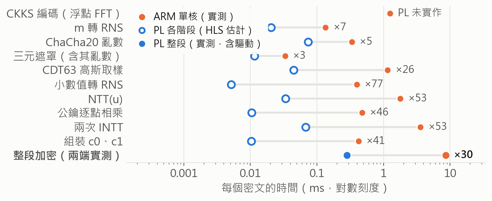
- 圖說
- 圖 8 每個模組處理一個密文所需的時間，橫軸為對數刻度。橘點為 ARM 單核實測；空心藍點為 PL 各階段的 HLS 估計；最下一列為整段加密的兩端實測，PL 的時間包含驅動的複製、檢查、同步與清除。
- 怎麼看
- 點越靠左越快，同一列兩點的距離即為倍數。PL 以資料流方式同時執行各階段，因此整段時間不是各階段時間的總和。
- 重點
- 整段加密在 ARM 單核需 8.56 ms，在 PL 路徑只需 0.281 ms（30 倍）；只計 DMA 與 PL 核心為 0.134 ms（64 倍）。CKKS 編碼是浮點 FFT，PL 尚未實作，因此留在 ARM。
PL 的呼叫成本
| 每次呼叫的密文數 k | 呼叫時間（ms） | 驅動時間（ms） | 每個密文（ms） |
|---|
| 1 | 0.424 | 0.281 | 0.424 |
| 2 | 0.732 | 0.469 | 0.366 |
| 4 | 1.318 | 0.800 | 0.330 |
| 8 | 2.493 | 1.548 | 0.312 |
此表取自正確性檢查（board_enc_check 20：每個 k 各 20 個 frame，每個 frame 皆逐字比對並解密檢查，取中位數），因此每個密文的時間（k = 8 為 0.312 ms）高於連續加密的 0.281 ms。以 k 對呼叫時間做線性迴歸，每次呼叫的固定成本約 0.136 ms，每多一個密文約 0.295 ms。下列各階段取自連續加密（k = 8）的最後一次呼叫（µs）：複製輸入 82、檢查輸入 148、快取同步（送出） 64、DMA 與 PL 核心 1074、快取同步（取回） 63、檢查輸出 300、複製輸出 185、清除緩衝區 274。
DMA 與 PL 核心只占 1.07 ms，驅動在 ARM 上的複製、檢查、同步與清除共 1.12 ms，約為 PL 路徑的一半。只把部分模組放到 PL 時，這部分資料往返的成本會在每一次呼叫重複出現。依 HLS 原始碼的排程模型，PL 處理一個 frame（8 個密文）約需 1,056.9 µs，與上述最後一次呼叫實測的 1,074.4 µs 相差 1.6%；PL 的瓶頸為 3 個模數引擎的 NTT／INTT 鏈，取樣器的時間與其相當，兩者以資料流同時執行（詳見 energy_probe/kv260/partition/hls_model/）。此一致性只驗證瓶頸所在的模數引擎鏈，且模型中 ChaCha20 的呼叫延遲曾以此類實測值排除不合理的範圍；非瓶頸階段（m 轉 RNS、三元遮罩、CDT63、ChaCha20）的估計未經實測驗證。
三種切分方式
| 方案 | ARM 負責 | PL 負責 | 每秒
筆數 | 每焦耳
筆數 | 來源 |
|---|
| 全部在 ARM | 全部 | — | 198.6K | 19.5K | 實測
（4 執行緒） |
| 只放 NTT／乘法／INTT | 正規化、編碼、m 轉 RNS、取樣、小數值轉 RNS、組裝、資料往返（每個密文送 48 KiB、收 96 KiB） | NTT(u)、逐點相乘、兩次 INTT | 522.2K | 51.5K | 模型估計 |
| V8b：加密整段在 PL | 正規化、編碼、驅動 | m 轉 RNS 至組裝 | 1.19M | 110.5K | 實測
（共同執行） |
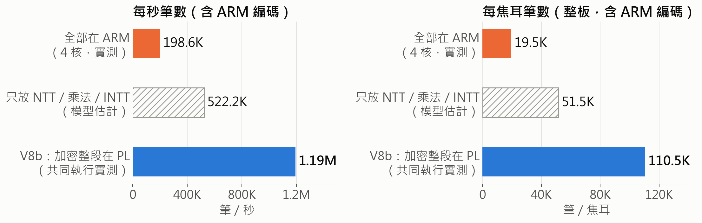
- 圖說
- 圖 9 三種切分方式的每秒筆數與每焦耳筆數，皆包含 ARM 端的正規化與編碼。斜線長條為模型估計，其餘為實測；V8b 的實測為共同執行（兩個獨立程式同時執行，系統速度取兩者中較慢者）。
- 怎麼看
- 兩張圖的長條越長越好。模型以單核實測的模組時間、每顆忙碌核心的功率增量、PL 路徑每個密文 0.242 mJ（已扣除驅動在 ARM 上的部分）與驅動的每位元組成本計算。
- 重點
- V8b 切分的每焦耳筆數為全部在 ARM 的 5.7 倍，每秒筆數為 6.0 倍。只放 NTT／乘法／INTT 時，取樣、組裝與資料往返仍占用 ARM，模型估計只有全部在 ARM 的約 2.4–2.6 倍（模型對模型 2.4 倍、模型對實測 2.6 倍）。模型對兩個有實測的方案，每秒筆數高估 4.9% 與 1.6%（V8b 切分的每秒筆數由 3 核正規化與編碼決定，該項比對只檢驗其多核擴展），每焦耳筆數高估 8.2% 與 6.5%；即使估計值偏高，V8b 切分仍約為只放 NTT／乘法／INTT 方案的 2.1 倍。
瓶頸：加密上行路徑（以 CPU 規格程式計）由 ARM 編碼決定
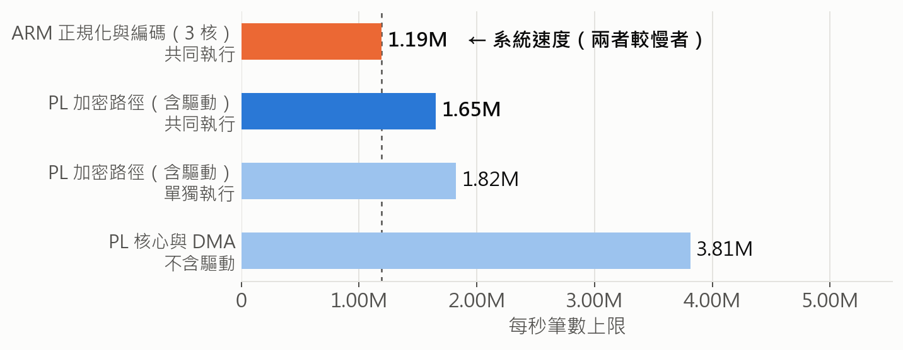
- 圖說
- 圖 10 V8b 切分下各段的處理能力（每秒筆數）。前兩列為共同執行時同時量得：ARM 以 3 核執行正規化與編碼，PL 由 1 個驅動執行緒驅動；第三列為 PL 單獨執行；末列為不含驅動的上限。
- 怎麼看
- 虛線為系統速度（兩者中較慢者），與編碼速度相等是定義使然；瓶頸須由同時量得的兩個速度判斷。
- 重點
- 共同執行時，3 核正規化與編碼每秒 1.19M 筆，低於同時執行的 PL 加密路徑（每秒 1.65M 筆），因此加密上行路徑的瓶頸已轉到 ARM 編碼。編碼只要加速約 1.4 倍，即達共同執行時 PL 加密路徑的速度。PL 加密路徑單獨執行時為每秒 1.82M 筆（共同執行時慢約 9%），以此值計約需加速 1.5 倍，僅供參考。系統若要再提高速度，須減少驅動的複製與檢查；PL 核心與 DMA 本身可達每秒 3.81M 筆。
往返一批資料的工作量
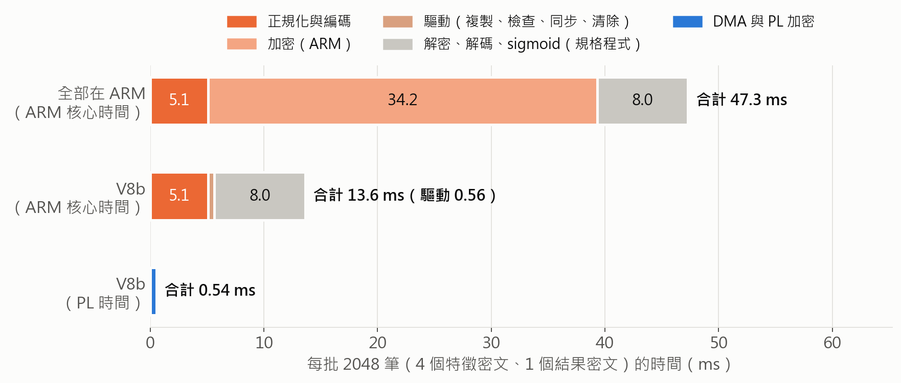
- 圖說
- 圖 11 客戶端處理一批 2048 筆資料（送出 4 個特徵密文、收回 1 個結果密文）所需的 ARM 核心時間與 PL 時間，各模組皆為單核實測。
- 怎麼看
- 長條越短，ARM 越有餘裕執行其他工作。灰色為下游的解密、解碼與 sigmoid（CPU 規格程式）。
- 重點
- V8b 切分把每批的 ARM 時間由 47.3 ms 降為 13.6 ms（3.5 倍），PL 只需 0.54 ms。加密移出後，ARM 時間以解密鏈（59%）及正規化與編碼（37%）為主。解密使用私鑰，依設計留在 ARM。V8b 應用程式的解密與解碼另有 NTT(s) 快取與多執行緒平行，編碼也使用較快的 N/2 點 FFT，實際的時間與比例皆會與規格程式不同；本團隊將於期末展示時以實際 client 量測。
結論與下一步
- 加密整段放在 PL 是三種切分中最佳的方式。在含 ARM 正規化與編碼的共同執行實測中，V8b 切分的每焦耳筆數為全部在 ARM 的 5.7 倍，每秒筆數為 6.0 倍。
- 只將 NTT／乘法／INTT 移至 PL 的效益有限。取樣、組裝與每次呼叫的資料往返仍占用 ARM，模型估計只有全部在 ARM 的約 2.4–2.6 倍。
- 加密上行路徑的瓶頸已轉到 ARM 編碼（以 CPU 規格程式計）。下一步：本團隊將以 V8b 應用程式的編碼器（N/2 點 FFT）重測共同執行以確認瓶頸，再減少驅動的複製與檢查（例如雙緩衝），並評估將編碼移入 PL。
- 下游留在 ARM。解密、解碼與 sigmoid 依安全設計留在 ARM；本團隊於期末展示的端到端量測將包含這一部分。
本章的限制
- ARM 端為 CPU 規格程式。規格程式未使用 V8b 應用程式的 Harvey NTT、N/2 點 FFT 的編碼與解碼，以及解密的 NTT(s) 快取；應用程式另以 3 執行緒平行處理單一密文（縮短延遲，不減少核心時間）。公鑰頻譜在本次量測中已快取，全部在 ARM 時以 4 執行緒平行處理不同密文。應用程式的 ARM 成本會較低。全部在 ARM 時，4 核只加密的速度為每秒 23.2 萬筆，與 OpenFHE 4 執行緒（19.6 萬筆）相近。
- PL 各階段為估計值。各階段時間依 HLS 原始碼估計，未逐階段實測；整段時間為實測。排程模型與實測的一致性只驗證瓶頸所在的模數引擎鏈（見「PL 的呼叫成本」）。
- 共同執行為近似。本章以兩個獨立程式近似 V8b client：PL 以全速加密，實際管線中 PL 約有 28% 的時間閒置。PL 因此多做約 39% 的工作，以 PL 路徑單獨執行時的功率增量按比例估計約多耗 0.25 W，使每焦耳筆數低估約 2%；實測值因此略為保守。
- 每種設定只量測 1 次。切分實驗每種設定量測 1 次（單核模組 8 秒、4 核 10 秒、PL 15 秒、整體 30 秒），倍數未附信賴區間。時間與以總功率計的每焦耳筆數，重複性可參考前述 10 輪比較（30 秒區間的每焦耳筆數變異係數 0.2–0.5%）；以功率增量計的模組能量（增量約 0.19–0.36 W）相對不確定度較大，約數個百分點。
- 能量歸屬。模組的能量以「執行時整板功率 − 待機功率」計算，包含記憶體與匯流排的活動。
資料與程式位置
| 內容 | 位置 |
|---|
| 軟硬體切分 | 資料夾 partition_20261123_212949 的 probe.csv、partition_runs.json、partition_summary.json、figures/fig_p1–fig_p4；工具在 repository 的 energy_probe/kv260/partition/ |
| 原始資料 | 資料夾 v8b_vs_openfhe_10x_20261123_185907 的 probe.csv（探針每 0.1 秒一筆）、runs.json（每輪板子輸出與時間點） |
| 分析結果與圖表 | 同一資料夾的 summary.json、figures/*.png、figures/summary_table.csv |
| 量測與分析工具 | repository 的 energy_probe/kv260/（見其中的 README.md） |
| 板上程式 | V8b：~/edgefhe-v8b-r5/test/board_enc_check sustain 30 8；OpenFHE：~/openfhe_bench/build/openfhe_sustain 30 8 {1|4}（OpenFHE 1.5.1 安裝於 ~/.local/openfhe-v1.5.1） |